In this tutorial, you will learn how to use Google Data Studio, a free product of G Suite, to take your NWEA MAP combined data file and transform it into powerful data visualizations used to gain insights into student learning.
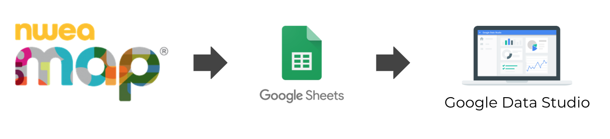
The above image shows the steps we will take to reach a final Data Studio report. We will start by helping you gain access to a fake data set that will serve as your NWEA MAP combined data file. This will take the form of a Google Sheet. From there we will connect it to a data source mapping each field name to a field type such as Text or Number. Once we have our data source configured, we will create a report mapping those fields to chart elements.
--------------------
Authors:
Megan Benay
Director of Inclusive Education and Data Systems & Strategy
Great Oaks Foundation
Marcos Alcozer
Project Director for DataViz Starter Pack
InnovateEDU
https://datavizstarterpack.org/
Before we dive into Google Data Studio itself, you will need to locate your NWEA MAP combined data file. The Data Export Scheduler in MAP allows you to export this file either as a one time export or on a regular schedule. Please locate this file if you'd like to complete the tutorial using your school's data.
We also have a sample combined data file with fake student data should you want to use that one for now. Clicking on the button below will cause Google to prompt you to make a copy of the sample data set for this tutorial.
Now that you have a data set, we want to connect it to Google Data Studio as a data source. For a data set, this only needs to be completed once. This is because a data source can be used in multiple reports. If you decide to create a second NWEA MAP report later on, you can reuse this data source without needing to create a new one.
- Sign into Google Data Studio
- Click on 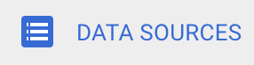 along the left hand side
- Click
 to create a new data source
to create a new data source - Find the Google Sheets connector and click "Select"
- Find your data set and click 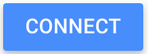
This will take you to a page where you can define the fields in the data set. On this page you can rename fields, change the field type, and set the default aggregation type. Take some time to rename fields and change field types if necessary and then click 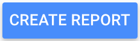. Data Studio will create a new report for you and confirm they are adding your new data source to this report.
If you have experience with the G Suite, you'll likely be familiar with most of the interface of Google Data Studio.
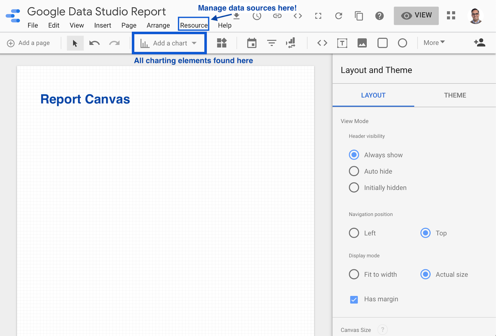
Resource Menu
If you ever need to return to the data sources screen to modify field names and data types, this is where you want to go. Resource → Manage added data sources.
Charting Elements
The report canvas can include text, images, and (of course) charts. This toolbar will give you quick access to all of your options. We will learn about the column chart in the next step of this tutorial. You should take time later to explore all charts available. Data Studio makes it easy to play with charts and delete them if they are not working. Full chart references can be found on Google's support site.
Layout and Theme
You'll see in the next step that when working with specific charts, the sidebar will transform to be your one stop shop for configuring that chart.
Let's dive in and create your first chart! When creating a chart, it's important to consider the type of information you want to show and how the underlying data is structured. We'll start with a simple data table.
- Click Add a chart and select the Table chart
- This will add a data table to your report canvas. Go ahead and resize it so it is larger on the canvas.
- Once the data table has been created, you'll notice that Google Data Studio pre-fills the chart with data from your data source and a sidebar opens on the right of the screen.
- Configure the data table to match the image below.
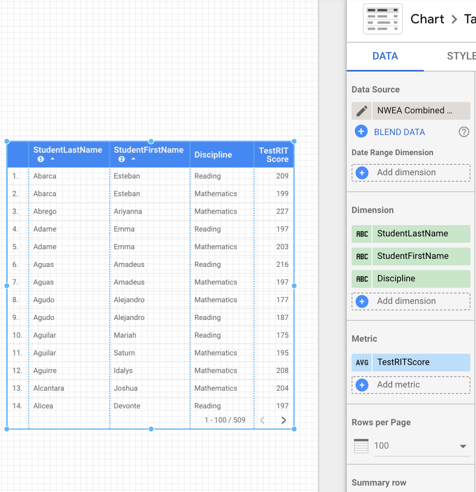
The next chart we are going to look at is the stacked bar chart. We want to look at how students performed at the goals level for each test. Here is what our end result will look like:
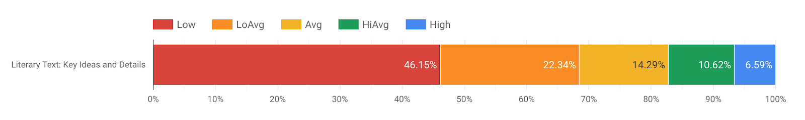
Page Filter
We'll start by filtering the page to only show data for the NWEA MAP Reading assessment. Head to Page, Current page settings to access the Current Page Settings sidebar. Click Select Data Source and choose the combined data file source we started with earlier in this tutorial. Next click Add a filter to add a page filter. We want to create a filter that only includes data where Discipline shows Reading.
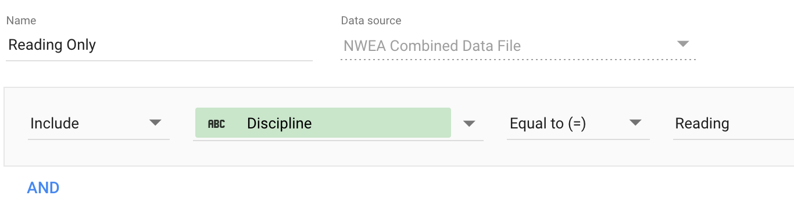
Add Your Chart
We're now ready to draw our chart. Click on Add a Chart and select the 100% stacked bar chart under the Bar section. We want the chart configured to include:
- Dimension: Goal1Name
- Breakdown Dimension: Goal1Adjective
- Metric: Goal1Adjective
- Sort: Goal1Name
- Secondary Sort: Goal1Adjective (Ascending)
Hover over the metric and click the pencil icon to configure the metric to display each performance level as a percentage of the total.
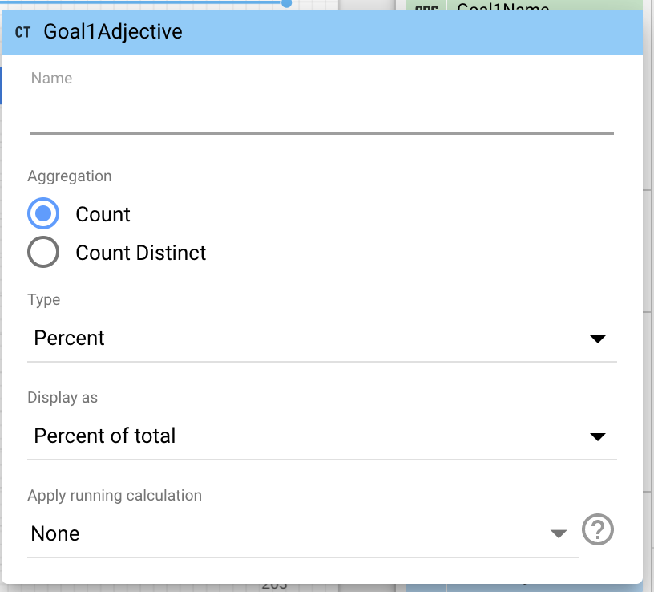
Configure your chart colors
We can customize the colors we are using in the bar chart by using the Style section to the right. Select Dimension values under Color by. Clicking on Manage dimension value colors will allow you to select the color for each performance band level.
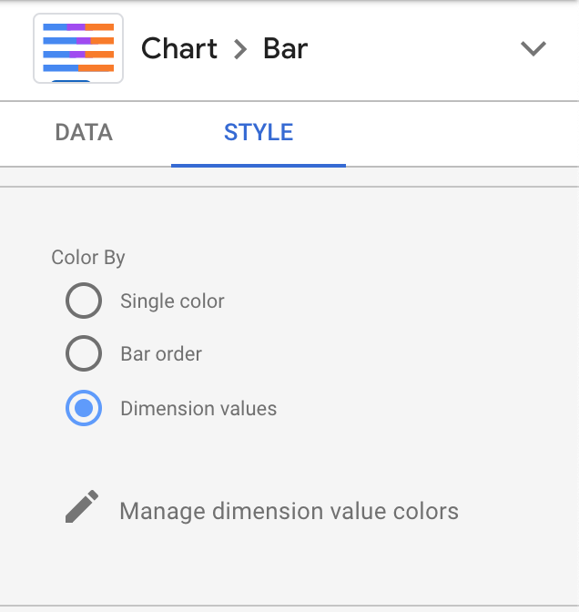
Rinse and Repeat
Copy and paste your chart to create one for each additional goal. For example, you'll swap out Goal1 for Goal2 wherever you see it under the sidebar to the right. You'll notice in the image below we've also hidden the legend for each additional chart using the Style menu on the sidebar.
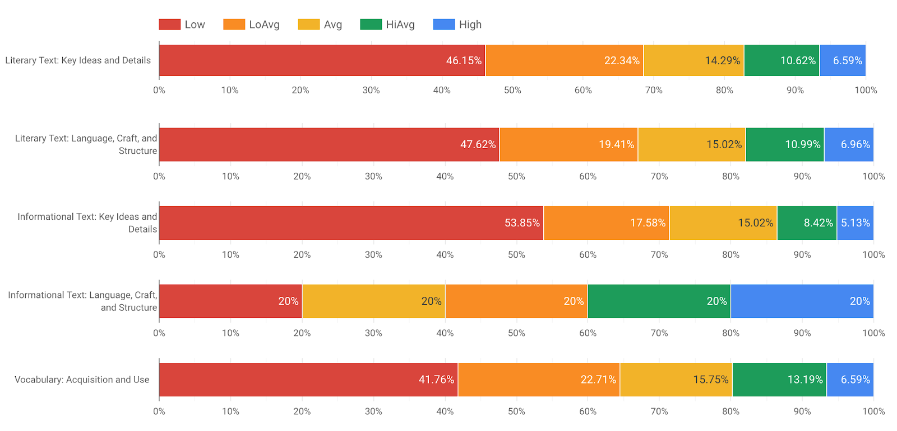
Related Data Studio Support Articles:
https://support.google.com/datastudio/answer/7326859?hl=en&ref_topic=7327560
Sharing is the same as any Google Drive file! Whether you are in edit mode or view mode, you will see this icon at the top of the page. You will be presented with the same share box available across many Google Products. You can decide to share individually, with a group, or create a shareable link.

You're at the end! Hopefully you feel comfortable and understand how to bring data into Google Data Studio, create visualizations, and share those dashboards with users in your organization. In this Codelab we used Google Sheets as our data connector, but Data Studio supports at least a dozen more including Google Cloud SQL, BigQuery, Cloud Storage, MySQL, and PostgreSQL.
We recommend that you keep an eye on the updates blog for Data Studio as well as this is a beta project that is being developed at a rapid pace.